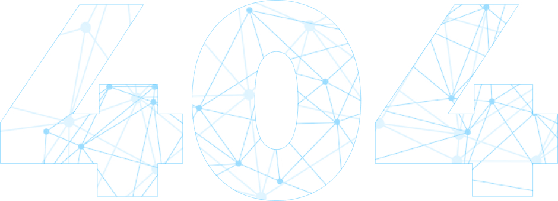

<section class="p404 container">
  <div class="p404-l">
    <h2>Что-то пошло не так...</h2>
  
    <p>Кажется, такой страницы не существует</p>
  
    <a href="#" class="p404-btn page-button">Вернуться на главную</a>
  </div>

  <div class="p404-img img-contain">
    
  </div>
</section>